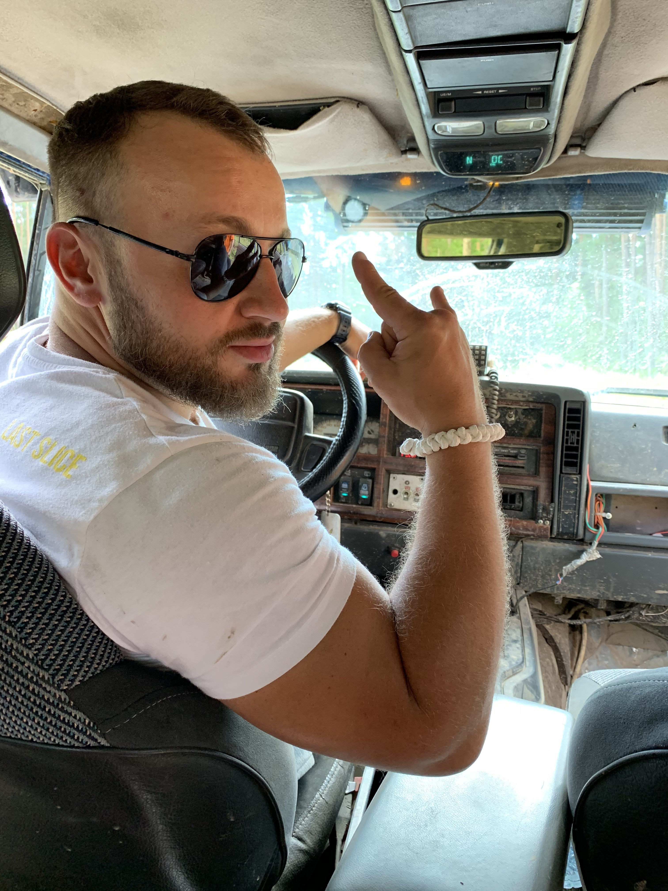

<aside class="sideBar">

    <div class="sideBar__header">
        
    </div>

    <div class="sideBar__content">
        <div class="prof">
            <div class="prof__image">
                
            </div>
            <h2 class="prof__item">Фурсов Олег</h2>
            <p class="prof__discrube">блог front-end разработчика</p>

            <ul class="social">
                <li class="social__item">
                    <a class="social__link" href="#" target="_blank">
                        
                    </a>
                </li>
                <li class="social__item">
                    <a class="social__link" href="#" target="_blank">
                        
                    </a>
                </li>
                <li class="social__item">
                    <a class="social__link" href="#" target="_blank">
                        
                    </a>
                </li>
            </ul>
        </div>
        <div class="prof__line"></div>

        <div class="prof__text">
            Front-end разработчик. Практик верстки сайтов. Созданием сайтов занимаюсь с 2012 года. Работал в нескольких ИТ компаниях и наработал более 10 000 часов в создании сайтов различной сложности.
        </div>

        <div class="prof__line"></div>
    </div>

    <div class="sideBar__footer">
        <a class="btn btn--red" href="#">Мои работы</a>
        <button class="btn btn--blue" type="button">Написать мне</button>

    </div>

</aside>